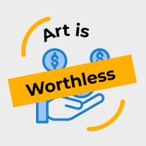
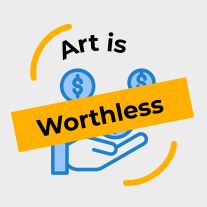

(서울=뉴스1) 윤슬빈 여행전문기자
스위스가 6월부터 해외 관광객 맞이에 나선다. 26일 스위스 관광청은 최근 스위스 정부가 유럽연합(EU)이 유럽의약품청이 승인한 백신을 접종한 제3국 관광객들의 입국을 6월부터 허용하는 것과 관련해 ‘백신 증명서’ 등 관광객 맞이를 위한 준비에 돌입했다고 밝혔다.
우선 스위스 정부는 이달 말부터 자체적인 코로나 백신 증명서를 발급해 EU의 ‘디지털 녹색 증명서’와 호환할 수 있도록 시범 운영한다. 이에 따라 스위스 입국 시 증명서를 제시하면 별도의 자가격리 없이 스위스 여행이 가능하다. 또한 스위스 현지는 호텔 투숙객에만 제한적으로 허용한 레스토랑을 전면 운영하고, 축제 및 이벤트 재개, 레저 시설 재개장을 앞두고 있다고 전했다.
앞서 스위스 정부는 지난해 초 4000여개의 관광 관련 시설과 모든 대중교통에 대해 코로나 19로부터 안전함을 인증하는 ‘클린 앤 세이프’ 캠페인을 도입했다. 기본적인 방역 수칙을 제공하는 관광 시설들이 해당 라벨을 이용할 수 있는데, 지난 1년간 인증 받은 모든 관광지에서 대규모 감염 사례가 발생하지 않았다.
현재 여행사들은 ‘클린 앤 세이프’ 라벨을 도입한 스위스 여행 상품을 속속 개발하는 분위기다.
스위스관광청 관계자는 “해외 여행자들을 맞이할 준비를 한다는 사실은 여행자뿐 아니라 관광 업계에도 무척이나 반가운 소식”이라며 “ 스위스는 많은 여행자가 다시 찾는 여행지가 되기 위해 시설적인 부분 외에도 여행자들의 안전을 보장하기 위한 포괄적인 보호의 개념을 마련 중”이라고 밝혔다.
한편, 관광청에 따르면 현재 기준 스위스인의 46%이상이 1차 백신 접종을 마쳤으며, 6월 말까지 전국민이 접종을 완료할 것으로 예상한다. 2차까지 예방 접종을 완료한 스위스 인은 약 14%이다.
seulbin@news1.kr
다우존스 0.31% 하락 등 뉴욕 3대 지수 일제히 하락
IT 0.4% 상승 제외 대부분 하락... 금융, 부동산 등 큰 폭
6월 CPI 전월비 0.9% 올라 예상치 0.5% 상회
불러드 “비상조치 축소” vs 메리 “인플레 오래 안 가”
미국 1주일 새 확진자 2배... 한국 1600명 전망돼
 
